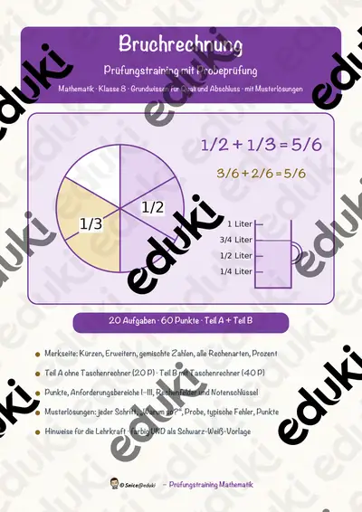
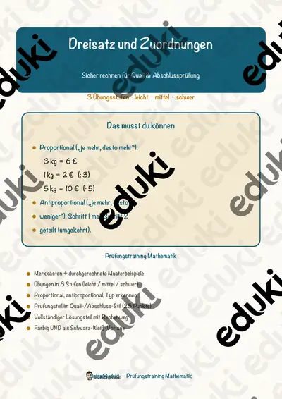

Brüche und Dezimalzahlen: Arbeitsblätter für Klasse 5–7 (Mathematik)
Brüche, Dezimalzahlen und Prozente bilden in Klasse 5 bis 7 das Herzstück der Mathematik. Sie hängen eng zusammen und werden im Alltag ständig gebraucht.
Gearbeitet wird in der Regel an Bruchteile, Kürzen und Erweitern und Dezimalzahlen, ergänzt um Prozentrechnung, Dreisatz und Zinsen.
Wo genau im Lehrplan das Thema steht, unterscheidet sich von Land zu Land, häufig im Fach Mathematik in der Sekundarstufe I (Klasse 5–7). Gemeinsames Ziel: die Schülerinnen und Schüler rechnen mit Brüchen und Dezimalzahlen und wechseln zwischen den Darstellungen.
Im Alltag einer Lehrkraft zählt, dass Material sofort einsatzbereit ist: Die Blätter zu Brüche und Dezimalzahlen greifen Kürzen und Erweitern, Dezimalzahlen und Prozentrechnung auf, lassen sich ausdrucken und kommen mit Lösungen, damit die Vorbereitung kurz bleibt. Leistungsstarke und schwächere Lesende erhalten über die Lesespurgeschichten Texte in drei Stufen.
Die Auswahl zum Thema umfasst derzeit 9 Titel, zum Beispiel Brüche Mindmap + 4 Arbeitsblätter mit Lösungen, Zinsen berechnen und Zinsrechnung Mindmap + 4 Arbeitsblätter mit. Dazu zählen 1 Lesespurgeschichte, 2 Prüfungstrainings und 3 Lückentexte mit Hörverstehen für Klasse 5–8. Eine Pizza oder Schokolade als Modell für Bruchteile bleibt anschaulich und ist schnell vorbereitet.
Das gehört zum Thema
Passende Arbeitsblätter und Materialpakete

Zinsen berechnen – rund um den Weltspartag – Lesespurgeschichte mit Rätselaufgaben (Klasse 8)

Bruchrechnung – Prüfungstraining Mathematik (Klasse 8)

Dreisatz und Zuordnungen – Prüfungstraining Mathematik (Klasse 8)

Prozent Lückentext mit Wortspeicher Hörverstehen und Suchsel

Bruchrechnung Lückentext mit Wortspeicher Hörverstehen und Suchsel

Dezimalzahl Lückentext mit Wortspeicher Hörverstehen und Suchsel

Brüche Mindmap + 4 Arbeitsblätter mit Lösungen + Lernvideo (QR) – erweitern, kürzen, vergleichen

Zinsrechnung Mindmap + 4 Arbeitsblätter mit Lösungen + Lernvideo (QR) – Zinsen, Zinssatz, Kapital & Monatszinsen

Dreisatz Mindmap + 4 Arbeitsblätter mit Lösungen + Lernvideo (QR) – proportional & antiproportional
Häufige Fragen
Für welche Klassenstufe passen die Arbeitsblätter zu Brüche und Dezimalzahlen?
Passend sind Klasse 5–8. Von den 9 Titeln wenden sich die meisten an Klasse 6, einige lassen sich differenzierend auch in benachbarten Stufen nutzen.
Welche Inhalte decken die Materialien zu Brüche und Dezimalzahlen ab?
Die Materialien arbeiten an Bruchteile, Kürzen und Erweitern und Dezimalzahlen und gehen dann weiter zu Prozentrechnung, Dreisatz und Zinsen. Vorab lohnt ein Blick in den Lehrplan des eigenen Bundeslandes.
Wie setze ich Brüche und Dezimalzahlen im Unterricht ein?
Eine Pizza oder Schokolade als Modell für Bruchteile bleibt anschaulich und ist schnell vorbereitet. Danach genügt meist ein Material als Einstieg und eines zum Üben.
Mehr Material nach Fach und Klasse
Verwandte Lehrplanthemen
- Terme, Gleichungen und Funktionen (Mathematik, Klasse 6–10)
- Addition und Subtraktion (Mathematik, Klasse 1–4)
- Daten, Diagramme und Wahrscheinlichkeit (Mathematik, Klasse 3–9)
- Das kleine Einmaleins (Mathematik, Klasse 2–4)
- Geometrie: Körper, Flächen und Formen (Mathematik, Klasse 1–6)